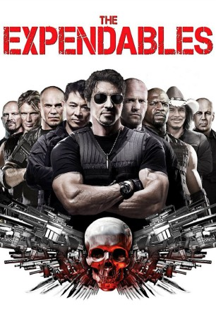
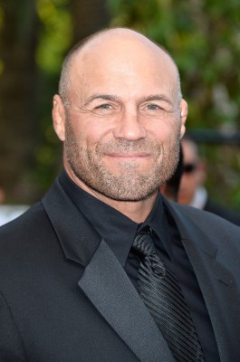
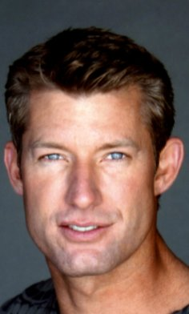
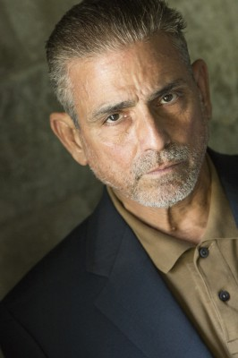

#326 The Expendables 1
 gesehen am 09.03.2015
gesehen am 09.03.2015
 
 IMDB-Wertung: 6.5 / 10
IMDB-Wertung: 6.5 / 10  Metascore: 45
Metascore: 45 
The Expendables nennt sich ein Trupp bestens ausgebildeter Söldner, der von dem mit allen Wassern gewaschenen Barney Ross befehligt wird. Von dem undurchsichtigen Church, der den Mord an seinem Sohn rächen lassen will, erhalten sie den Auftrag, den Diktator Garza in seiner Bananenrepublik zu töten und den alten, demokratisch gewählten Präsidenten wieder zu installieren. Schnell stellen Ross und Co. fest, dass Garza zum einen von der CIA gedeckt wird, ihr Auftraggeber zum anderen mit falschen Karten spielt. Und dann heftet sich mit dem durchgeknallten Gunnar Jenssen auch noch ein unehrenhaft aus der Gruppe ausgeschiedener Killer an die Fersen der Expendables.
Jahr: 2010
Dauer: 103 Minuten
FSK: 18
Land: USA Studio: LionsgateTonspuren: DTS - ,
Untertitel:
Auflösung: 1080p (1920×792) Größe: 6277 MB
Genre: Action, Abenteuer, Thriller
Regisseur:  Sylvester Stallone
Sylvester Stallone
Drehbuch: Dave Callaham, Sylvester Stallone, Dave Callaham
Soundtrack: Brian Tyler
Darsteller:
 Sylvester Stallone als Barney Ross
Sylvester Stallone als Barney Ross Jason Statham als Lee Christmas
Jason Statham als Lee Christmas Jet Li als Yin Yang
Jet Li als Yin Yang Dolph Lundgren als Gunner Jensen
Dolph Lundgren als Gunner Jensen Eric Roberts als James Munroe
Eric Roberts als James Munroe-  Randy Couture als Toll Road
 Steve Austin als Paine
Steve Austin als Paine David Zayas als General Garza
David Zayas als General Garza- Giselle Itié als Sandra
- Charisma Carpenter als Lacy
- Gary Daniels als The Brit
 Terry Crews als Hale Caesar
Terry Crews als Hale Caesar Mickey Rourke als Tool
Mickey Rourke als Tool-  Hank Amos als Paul
 Amin Joseph als Pirate Leader
Amin Joseph als Pirate Leader- Senyo Amoaku als Tall Pirate
- Tze Yep als Gagged Hostage
- Lauren Jones als Cheyenne
- Daniel Arrias als Cell Guard #2
- Tatsu Carvalho als Palace Guard
 Marcio Rosario als Royal Guard Leader
Marcio Rosario als Royal Guard Leader- John Baran als Soldier , uncredited
 Gino Galento als Red Beret , uncredited
Gino Galento als Red Beret , uncredited- Gideon Hodge als Soldier , uncredited
 James Landry Hébert als Bill Parker , uncredited
James Landry Hébert als Bill Parker , uncredited- Everton Lawrence als Pirate , uncredited
-  David Joseph Martinez als Peasant Worker , uncredited
 Aaron Saxton als Soldier , uncredited
Aaron Saxton als Soldier , uncredited Arnold Schwarzenegger als Trench , uncredited
Arnold Schwarzenegger als Trench , uncredited Bruce Willis als Mr. Church , uncredited
Bruce Willis als Mr. Church , uncredited- Antonio Rodrigo Nogueira als Garza's Bodyguard #1
- Antonio Rogerio Nogueira als Garza's Bodyguard #2
- Sassa Nacimento als Vilena Customs Agent
- R.A. Rondell als Gunner's Goon
- Precious Jenkins als Gunner's Pirate
- Ronn Surels als American Operative
- Prazeres Barbosa als Old Woman Bartender
- Jose L. Vasquez als Cell Guard #1
- Antonio Gullo als Farmer
- Javier Lambert als Squad Leader
- Paulo Bastos als Vilenan Soldier
- Joshua Cardenez als Red Beret Soldier , uncredited
- Rod Carvalho als Hostage , uncredited
- Topher Jones als Sgt. Velasco , uncredited
- Cody Juneau als Red Beret Soldier , uncredited
- Shadoe Knight als Gagged Hostage , uncredited
- Ace LeBleu als Red Beret , uncredited
Datei: X:\FSK18-Collections\Expendables\Expendables 1, The (2010, FSK18, 1920x792).mkv seit 16.02.2015
Festplatte: FSK18
 Alle Filme aus Gruppe 'FSK18-Collections\Expendables'
Alle Filme aus Gruppe 'FSK18-Collections\Expendables'